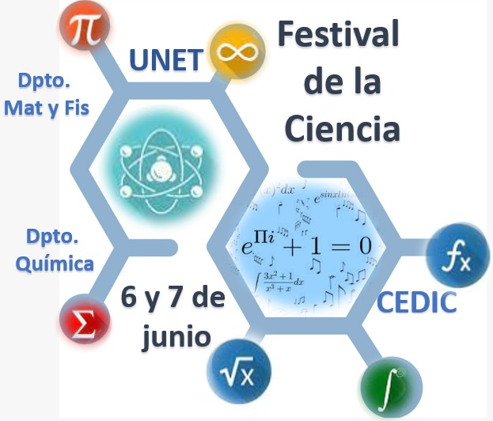

El Festival de las Ciencias
El Festival de Ciencias es un evento organizado por el Centro de Enseñanza y Divulgación de las Ciencias (CEDIC) en colaboración con los departamentos de Matemática y Física y Química que tiene por finalidad generar experiencias memorables y participativas que fomenten la curiosidad y la experimentación.
Este emocionante evento se llevará a cabo los días 6 y 7 de junio en las instalaciones de la Universidad Nacional Experimental del Táchira (UNET). Te invitamos a ser parte de esta gran celebración de la ciencia y la tecnología.
¿Qué podrás encontrar en el Festival de Ciencias?
Exposiciones: Disfruta de una amplia gama de proyectos innovadores desarrollados por estudiantes en el áreas de ciencia y tecnología.
Conferencias: Participa en conferencias magistrales donde podrás aprender sobre los últimos avances en diversos campos científicos.
Un ambiente dinámico y familiar: Comparte este evento en familia y amigos, y disfruta de un ambiente lleno de aprendizaje y entretenimiento.
¡No te pierdas esta oportunidad de sumergirte en el fascinante mundo de la ciencia y la tecnología!.
Es importante destacar que el Departamento de Matemática y Física, a través de la revista Aleph subcero, publicará una edición especial en el apartado de divulgación científica. Esta edición estará dedicada a todos aquellos trabajos que cumplan con los requisitos de evaluación y arbitraje establecidos por la revista. Los invitamos a participar activamente en estas actividades y a formar parte de esta gran celebración.
Temática
Ciencias Fundamentales
Ciencias Aplicadas
Computación y estadística
Robótica
Programa
Conferencias
Jueves 06 de Junio (Mañana).Lugar Auditorio A. Conferencia 1: Bioingeniería, conjunción de conocimientos de las ciencias exactas, de la ingeniería y de la tecnología para el servicio de la humanidad.
Hora: 9:30 am
Conferencia 2: Desatando Potencial: Las Olimpiadas Matemáticas como catalizador de la enseñanza, competitividad y vocación.
Hora: 10:45 am
Viernes 07 de Junio (Mañana).Lugar Auditorio A. Conferencias
Conferencia 3: El enfoque investigativo en el aprendizaje de las ciencias.
Hora: 9:30 am
Conferencia 4: La Química Computacional como apoyo en el aula de química.
Hora: 10:45 am
Expo-Festival
Exposiciones de proyectos científicos Jueves y Viernes de 8:00 am a 12:00 m
Lugar: Hall de la Biblioteca UNET
Programa del Evento
| Hora | Jueves 06 | Viernes 07 |
|---|---|---|
| 8:00 a 8:45 | Organización de exposiciones | |
| 9:00 a 9:30 | Apertura del Evento | |
| 9:30 a 10:15 | Conferencia 1 | Conferencia 3 |
| 10:15 a 10:45 | Coffee break/Receso | Coffee break/Receso |
| 10:45 a 11:30 | Conferencia 2 | Conferencia 4 |
| 11:30 a 12:00 | Visita Guiada CEDIC, Aula Viva | Visita Guiada CEDIC, Aula Viva |
| 9:00 a 1:00 | Exposición de Proyectos | Exposición de Proyectos |